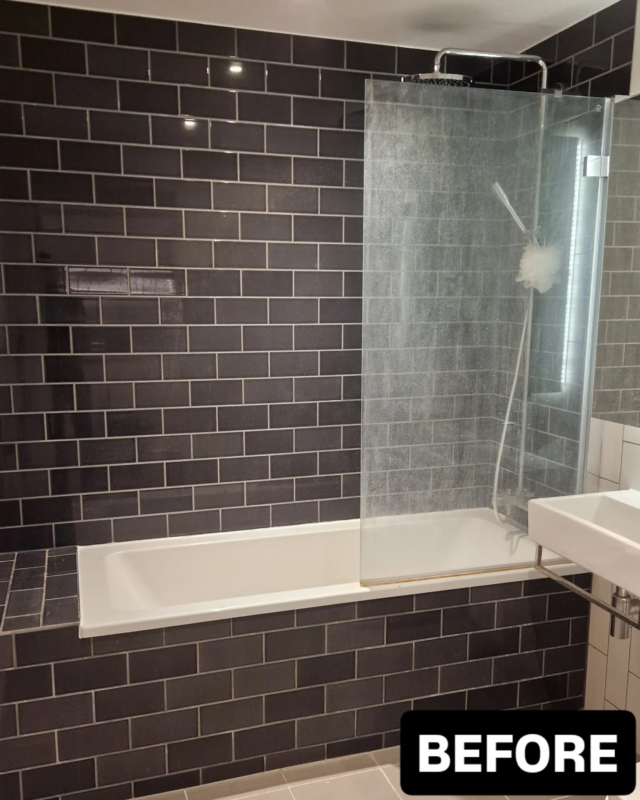
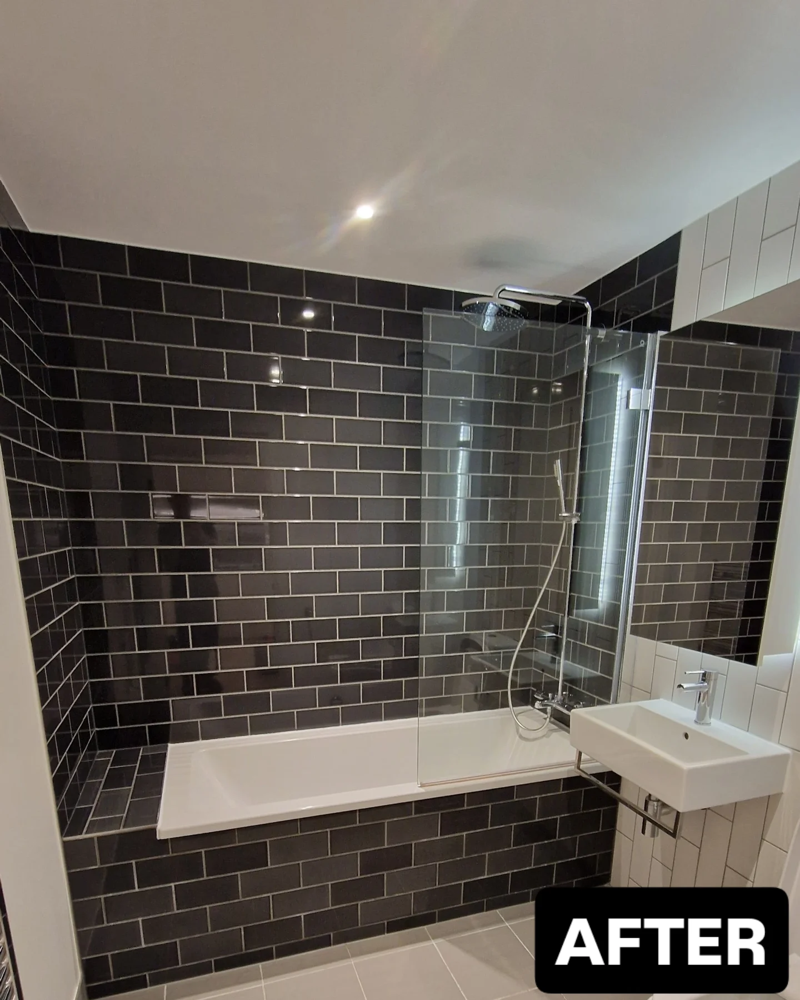
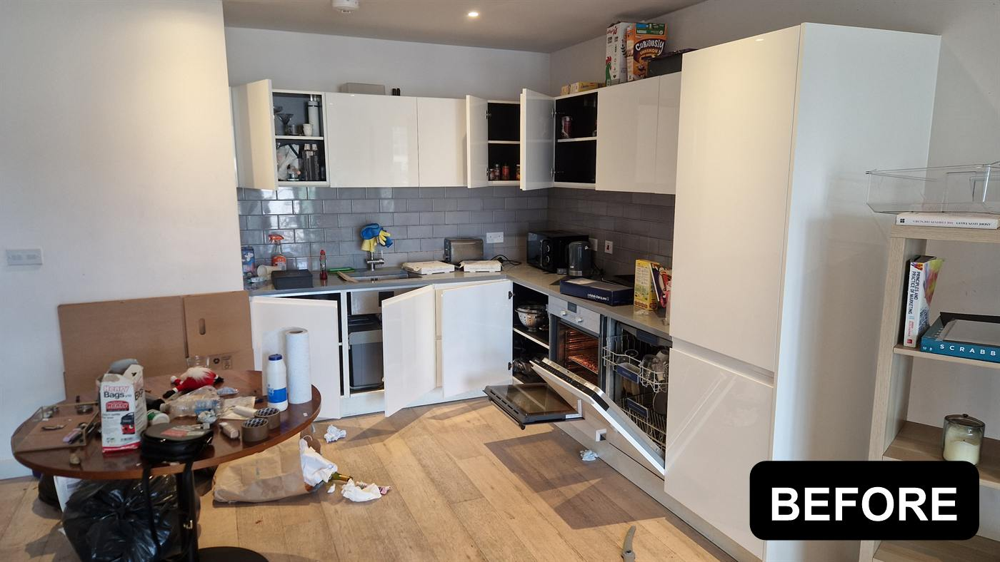
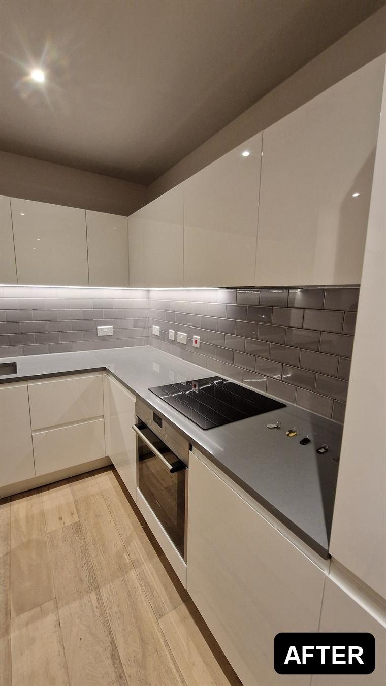
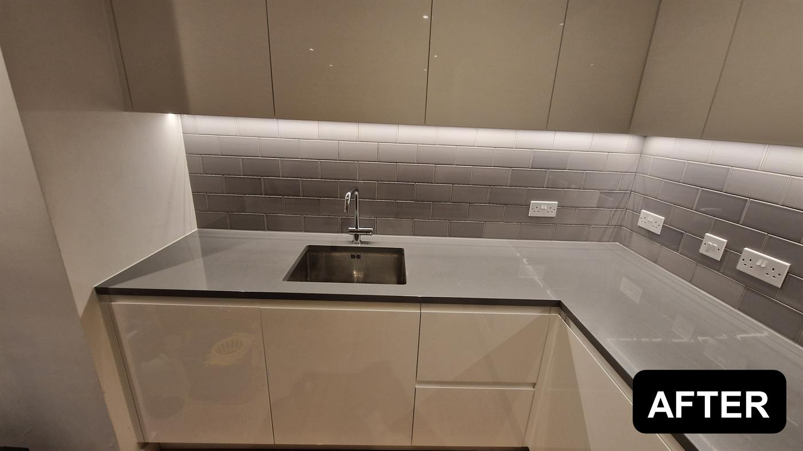

Kitchen
- Oven, hob and extractor
- Cupboards and drawers, inside and out
- Worktops, sink and taps
- Splashback tiles and appliances
Cleaning services
Detailed cleans that leave flats and houses ready for handover, for tenants, landlords and letting agents.
When a tenancy ends, the property needs to be returned in a clean, presentable condition. Ankorius carries out detailed end of tenancy cleans for flats and houses in East London and the surrounding areas, from standard rentals to high-end apartments that need extra care.
We work through the whole property room by room, paying close attention to the areas that are hardest to get right: kitchens, bathrooms, glass and the areas where dirt and limescale accumulate over time.
What is included
Results
Real before and after photos from end of tenancy cleans we have carried out.
End of tenancy clean
The bathroom of a high-end apartment, restored to a high standard. The difference is clearest on the shower screen, cleared of limescale and water marks.


End of tenancy clean
A high-end apartment that had been left abandoned, cleaned throughout and returned to a handover-ready standard.



How it works
Send us the address, the size of the property and when you need the clean done.
We come back to you with a clear proposal, so you know what to expect before we start.
Our team works through the property room by room, to a consistent standard.
The property is left clean and presentable, ready for the next occupant.
Common questions
It is a detailed clean of a rental property at the end of a tenancy, so that it is returned in a clean and presentable condition for the landlord, the letting agent or the next tenant.
Tenants moving out, landlords preparing a property for the next occupant, and letting agents managing a handover all book this service.
Yes. We have cleaned properties that were left abandoned and in a poor condition, and returned them to a clean, handover-ready standard.
We are based in London and mainly cover East London and the surrounding areas. Get in touch with your address and we will confirm that we can help.
Send us the property details and your preferred dates using the contact form, by phone or email, or on WhatsApp, and we will send you a proposal.
More from Ankorius
Scheduled or on-demand cleaning for common areas, offices and washrooms.
Cleaning, building maintenance, fire alarm testing and 24/7 emergency response.
Tell us about your property and we will put together a proposal.